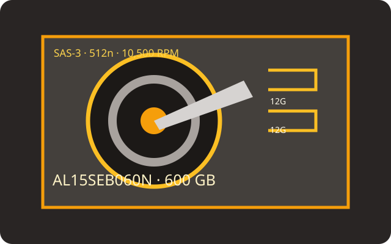

[ IDENTIFIED HDD // MODEL-SPECIFIC RECORD ]
Toshiba AL15SEB060N
600 GB 10.5K enterprise-performance SAS disk. The exact 512n SKU is distinct from sector-format alternatives in the AL15SE family.

Recorded specifications
| Exact model | Toshiba AL15SEB060N |
|---|---|
| Capacity | 600 GB |
| Sector format | 512n (native 512-byte logical sectors) |
| Interface / ports | SAS-3, 12 Gbit/s, dual-port |
| Rotational speed | 10,500 rpm |
| Cache | 128 MiB buffer |
| Form factor | 2.5-inch, 15 mm class |
| Workload / reliability | Toshiba reports 2,000,000-hour MTTF for the AL15SE series; this is not an individual-drive lifetime estimate. The cited source states no annual workload rating or MTBF; MTTF is not MTBF. |
Host compatibility and qualification
- Install only behind a SAS-capable controller and SAS backplane/expander, with a compatible 2.5-inch carrier and power. A SATA-only HBA/backplane cannot operate SAS drives.
- Validate controller firmware, capacity and native 512-byte sector support before adding it to a RAID set. Older SAS hosts may negotiate lower rates, subject to the OEM compatibility matrix.
- MTTF is a statistical series metric, not a service-life guarantee. Check the full model/firmware and live sector presentation; maintain separate verified backups.
Manufacturer sources
- Toshiba — AL15SE series product informationManufacturer family specifications and reliability context.
- Toshiba — Enterprise HDD product catalogManufacturer product catalog; confirm suffix and sector option from the device label.